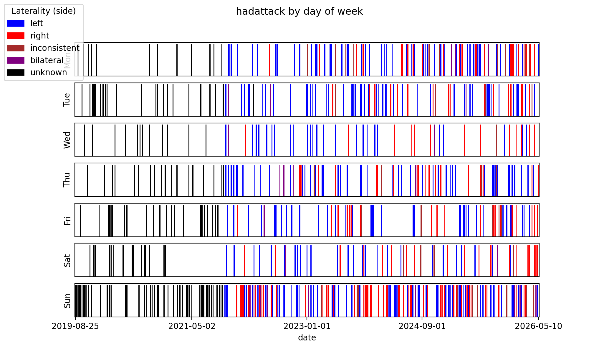
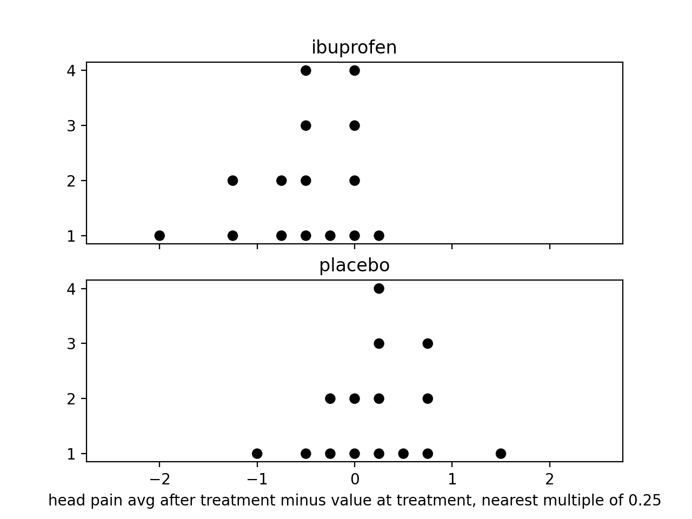
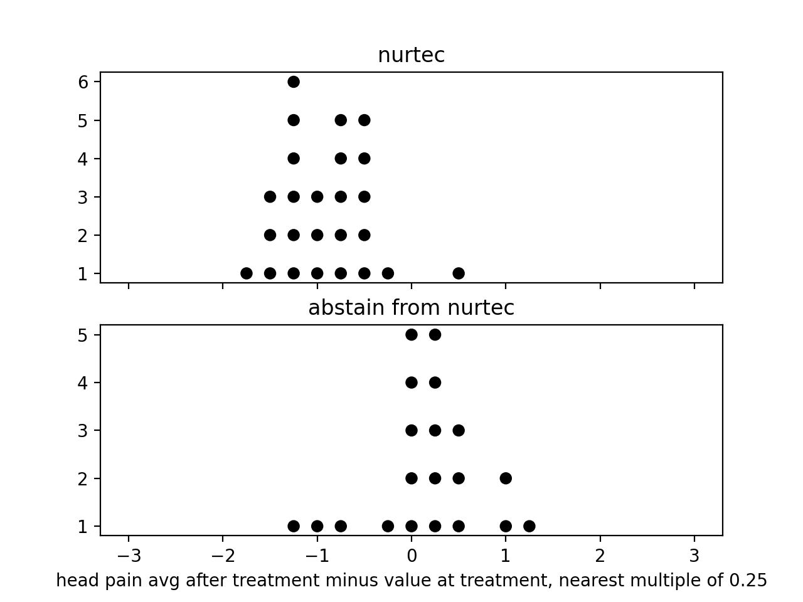

I suffer from migraine. This started around 2018 and has been gradually increasing in severity. Here are some treatments I have tried: magnesium, sumatriptan, amitriptyline, riboflavin, coenzyme Q10, Nurtec (rimegepant), propranolol, Emgality (galcanezumab), topiramate, rizatriptan. Starting around 2020, I have been writing down my health experiences in a Google sheet. I record text and tabular data for each day. I have written python programs that analyze the data I have written in this spreadsheet.
Here are some findings:

For years, I have been much more likely to have migraine attacks on Sundays than other days of the week. In the date range of the graph above, I recorded a migraine attack on 50% of Sundays, 28% of Mondays, 27% of Tuesdays, 15% of Wednesdays, 26% of Thursdays, 23% of Fridays, and 19% of Saturdays. I do not know why I have so many more migraine attacks on Sundays than other days of the week.
The laterality has changed over the years. First, there was the bilateral phase, when the majority of headaches were in the center of my forehead. The bilateral phase is not shown in the graph because I didn't record a laterality for each headache until 2021. Around the end of 2019, the headaches transitioned to being primarily left unilateral (that is, on the left side of my forehead). But the left unilateral majority was also only a phase. Today, the attacks are about 50% right unilateral and 50% left unilateral.
Ibuprofen was the first medication I tried for head pain. I first took ibuprofen when my head pain was just beginning in 2018. I knew that my mother had taken ibuprofen for her migraines for many years. In 2019, I came to believe that ibuprofen didn't work. There was also a time when I told my doctor that ibuprofen caused head pain the next day. I took ibuprofen many times for migraine attacks in 2019 and 2020. I believed it didn't work, but I often took it anyway, often because my parents wanted me to take it. I took either one, two, or three 200mg tablets at once as an abortive. By 2021, I had stopped taking ibuprofen. There were only three occasions when I took ibuprofen in 2021 and 2022 combined.
After a breakup with my neurologist in late 2022, I didn't have a prescription to Nurtec. I didn't believe Nurtec worked, because I had done a trial in which I flipped a coin to determine whether to take Nurtec on 44 Sunday mornings and found no relationship between whether I took Nurtec and any metrics of my head pain. So I was in a position where ibuprofen was the medication to try, since it doesn't require a prescription from a physician.
In early 2023, I started a randomized, placebo-controlled trial of ibuprofen. This kind of trial is known for its use by professionals on large numbers of patients, but I employed this technique for myself.
The trial consisted of a number of rounds that ended up being three. For each round, I put two capsules in each of ten small resealable plastic bags. For five of each round's bags, each capsule contained a 200mg tablet of ibuprofen, for a total of 400mg of ibuprofen in the bag. For the other five bags, each capsule contained a placebo. I did a lot of experimenting with placebos to minimize the chance of knowing whether a bag was ibuprofen or placebo on the day of taking it. The biggest factor for placebo selection was the sound when the capsule is handled. In the first round, I used pepitas as the placebos. In the second round I used small pinto beans. And in the third round I used small white beans.
I prepared each bag together with a plastic cup that would store whether the bag contained ibuprofen or placebo. I put a note on the inside of each cup saying whether it was ibuprofen or placebo, then I shuffled the cups with the bags in them. Then I removed the bags from the cups one at a time, putting a number from 1 to 10 on each bag and on the outside of its corresponding cup, being careful not to see the note on the inside of the cup. Then I put the bags in my backpack, and I put the cups in a secure location. The cups were stored upside down to prevent me from seeing the notes on the inside of the cups.
Once a round was set up, I waited for migraine attacks. I took each bag when I was having a migraine attack, just like I would if I was taking ibuprofen normally. I never took more than one bag in one day. Whenever I took the contents of a bag, I recorded the number of the bag in my Google Sheet. I thought ibuprofen did not work, so I didn't think I was making myself suffer by randomly taking a placebo instead.
I record data about the head pain intensity at points in time throughout the duration of each attack. I intend these numbers to be on the 10-point pain scale, but I almost never record a value less than 2/10 because I am never free of head pain. I have been recording head pain data during migraine attacks since 2021, so I didn't have to start doing it for this ibuprofen trial. It seems to be a response I have when I experience pain. Some might call it a coping behavior.
At the end of each round, I used the note inside each cup to determine whether the corresponding bag contained ibuprofen or placebo. Then I used a python program to analyze the results. The algorithm used by the python program is a bit complicated. It takes the average head pain over time from the time of treatment to the last recording of the day, and subtracts the head pain at the time of the treatment from that, and uses a few statistical methods to see if that number correlates with whether the bag contained ibuprofen or placebo.
Here is a self-contained version of the python program.
The number described in the previous paragraph correlated with whether the bag contained ibuprofen with a correlation coefficient around -0.55 and a p-value around 0.002. This means that 400mg ibuprofen is highly effective at reducing head pain in the hours following its consumption.
This dot plot shows the numbers used in the analysis. The key observation is that the dots in the ibuprofen category tend to be further to the left than the dots in the placebo category.

During the third and final round of the trial, I experienced health anxiety, fearing that I was damaging by body by taking the ibuprofen. However, in analysis I found that my perception of side effects was at least partially placebo effect. Notably, on 2023-10-08 I wrote, "Ok, this is definitely a side effect of ibuprofen", but that bag was placebo.
This trial was extremely successful from my point of view. When I started the trial, I was not expecting ibuprofen to perform well. Now I know that ibuprofen is highly effective as an abortive for my migraine attacks.
I started using Nurtec as a migraine abortive in October 2020, less than a year after it hit the market. At first, Nurtec seemed to be highly effective. But after a few months, it seemed to be ineffective.
From October 2021 to March 2023, I did a trial in which I used a random method with 50% probability to determine whether or not to take Nurtec on Sunday mornings. I did this on 44 Sunday mornings. This trial found Nurtec ineffective. The correlations between whether Nurtec was taken and the day's head pain statistics was nowhere near statistically significant. The correlation coefficients had magnitudes less than 0.1, and the p-values were greater than 0.5. With the result of this trial, I came to believe that I had experienced placebo effect in the first few months of Nurtec, and Nurtec had never been effective. This led me to take Nurtec a lot less. So in 2023 I was taking Nurtec a lot less than I was in the previous two years because I thought Nurtec didn't work.
Starting in August of 2024, I did another trial of Nurtec. The design of this trial was based on my placebo-controlled trial of ibuprofen, since that trial was very successful. In this trial, when I was having a migraine attack and deemed it an appropriate time, I flipped a coin (literally) to determine whether to take Nurtec. As of May 2026, I have done this 45 times. I got tails and took Nurtec on 25 of them, and I got heads and took a Tic Tac on 20 of them. Unlike the ibuprofen trial, this trial was NOT placebo-controlled: I knew what I was taking when I took it. I used the same algorithm used by my placebo-controlled trial of ibuprofen to analyze the results. The results are shown in the following image.

As you can see, Nurtec was highly effective at reducing head pain. This trial showed that Nurtec is effective as an abortive for my migraine attacks.
So this begs the question: why did Nurtec fail the Sunday morning trial, but work in the abortive trial? I don't know.
Nurtec has absolutely no side effects for me. Also, it can be taken without any liquids, unlike all my other medications. So there are times when Nurtec is the only abortive I can take.
There is one more thing I need to mention about Nurtec: it is currently very difficult to obtain. I have had to go through prior authorizations and insurance approvals to get it. In 2025, there were about 6 months when I could not get Nurtec because of prior authorization denial. I tried rizatriptan in the middle of this 6 months because I could not obtain Nurtec. Hopefully Nurtec will become easier to obtain in the future, since it is such a new medication.
Amitriptyline is the most harmful medication I have tried. Amitriptyline was the first treatment prescribed my first neurologist. I was prescribed 25mg amitriptyline per day, to be taken in the evening. I tried amitriptyline in early 2020 (before covid).
The physical effects from starting and continuing amitriptyline were weak. The clearest effect was dry mouth. But there were harmful mental effects that started while I was still taking amitriptyline regularly, which I describe below. Withdrawing from amitriptyline was the most severe medication-induced experience I have ever had. I withdrew from amitriptyline after taking it on 18 consecutive evenings. On the first night of reduced amitriptyline levels, I had severe sweating, making my pillow very, very wet. On the second night, I was completely unable to sleep; I did not sleep a single minute. I had extreme nausea for the first 4 days of reduced amitriptyline levels. After I took a few bites of a slice of pizza, I spent the next 15 minutes gasping for air. I found applesauce to be the most effective food. I was very weak and spent most of the time laying in my bed. I also felt cold and needed to wear a jacket indoors.
Amitriptyline also had strong effects on my mental state. I became delusional while I was on amitriptyline. I came to believe natural coincidences were signs from super-human intelligence (such as a god or aliens). On day 16 of amitriptyline, I discovered some natural coincidences that I thought proved super-human intelligence, and at that point I decided to withdraw from amitriptyline. From what I wrote during withdrawal, it is clear that I was completely delusional, perceiving significance in trivial personal events including hearing a bird outside and getting a junk text message. Over the months following the withdrawal, I investigated the natural coincidences using computer simulations, which you can find at this link (they all come from astronomy). It took months for all the delusional beliefs to be overturned in my mind, as I had believed there was more than enough significance to prove super-human intelligence. Once I had rejected the significance of all the coincidences, it appeared that it was a delusion caused by amitriptyline. But looking at my written records, I was interested in the possibility of finding signs from super-human intelligence in the weeks before I took amitriptyline, although I did not come to believe that there was proof of super-human intelligence until my 16th day on amitriptyline. So I am not sure to what degree amitriptyline caused these delusions, but it definitely had strong mental effects.